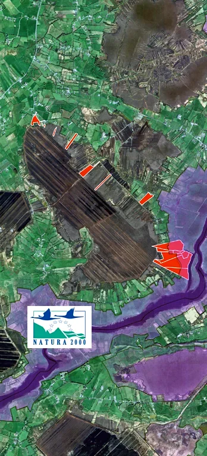

Welcome to Cornafulla Micro Reserve
We're a community-led organisation working in partnership with local landowners and the wider community to manage, conserve and communicate the natural, cultural and ecological heritage of Cornafulla Bog and the Shannon Callows.
We are supported by NPWS Peatlands and Natura Community Engagement Scheme, Tóchar wetlands restoration project and are members of The Community Wetlands Forum.